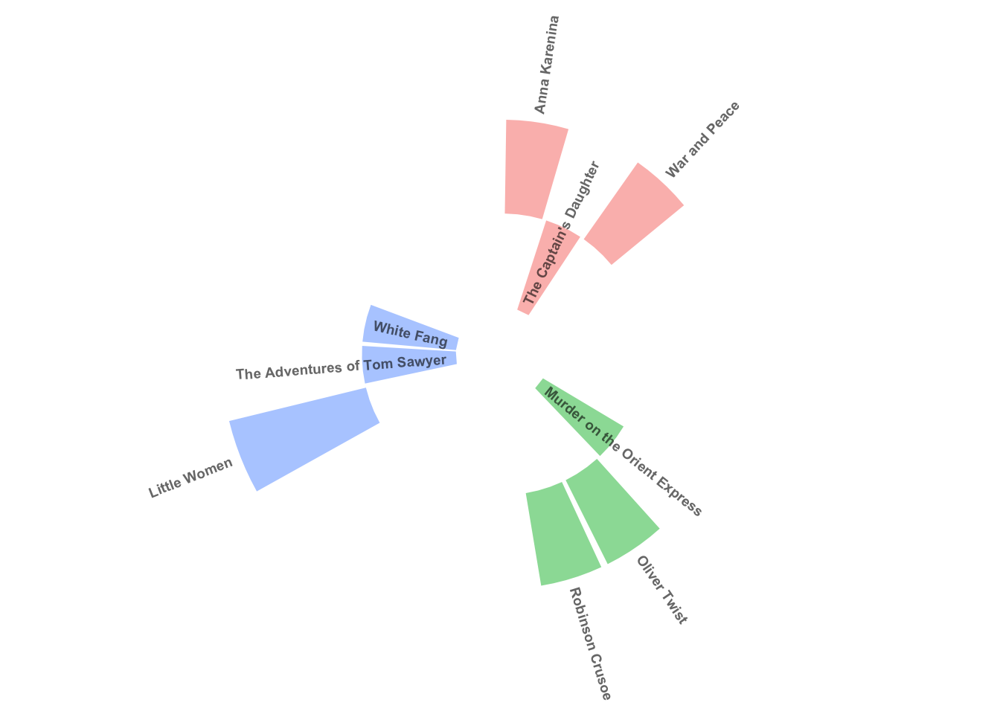
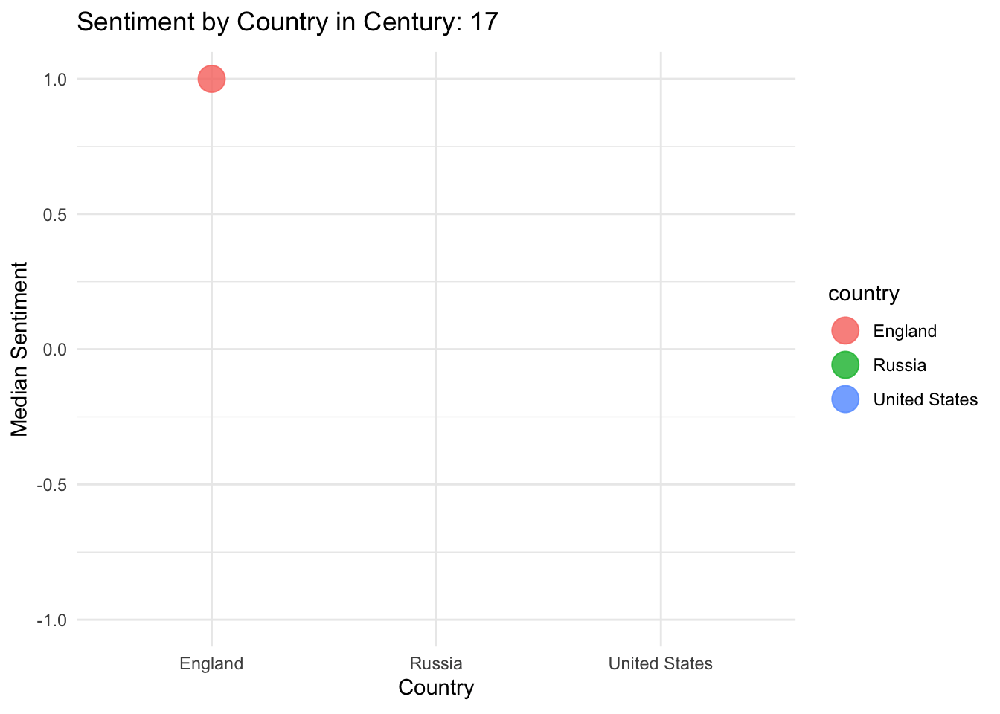

Sentiment analysis of narratives
What is Sentiment Analysis of Narratives?
Sentimental analysis of narratives is a the process of analysing and presenting the plots and mood of narratives of authors from different countries, centuries, races. Sentimental score is a number representing the level of the word’s sentiment. If the score is negative, the sentiment of the word is negative, if the score if positive, the sentiment score of the word is positive. If the score is zero, the word is neutral.
Narratives included
There were included authors from only 3 countries: USA, UK and Russia. You can see all the books on the top or on the right side of the website.
Why is this project important?
Before finding a book to read, you often think if it will match your taste and your mood at the time. This project can be useful to warn you about the sentimental aura of the book.
Plot number 1: Chapter-level sentimental score across each book
This plot presents the sentimental score of each chapter in each book. It is easier to understand the emotional plot of the book according to this plot.
The narrative with the most amount of plot twists is The Adventures of Tom Sawyer, according to the abrupt changes in the plot’s sentimental value across the chapters.
Plot number 2: Median sentimental score of each book grouped by the countries
Blue: USA, Green: UK, red: Russia.

Little Women has the highest median sentimental score. It also means that the sentimental score of the plot of the narrative stays mostly at the same level, because the sentimental score doesn’t have sharp twists.
Plot number 4: Median sentimental score across the centuries in the countries

UK is the country with the most sentimental difference during the centuries.
Conclusion
The narrative with the most amount of plot twists is The Adventures of Tom Sawyer, according to the abrupt changes in the plot’s sentimental value across the chapters.
Little Women has the highest median sentimental score. It also means that the sentimental score of the plot of the narrative stays mostly at the same level, because the sentimental score doesn’t have sharp twists.
Louisa May Alcott is the author with the highest median sentimental score.
UK is the country with the most sentimental difference during the centuries.